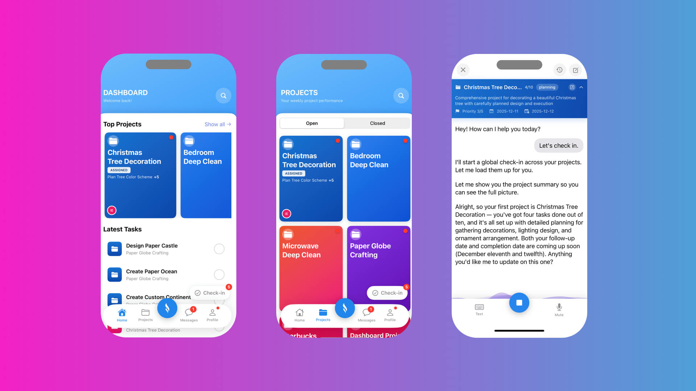
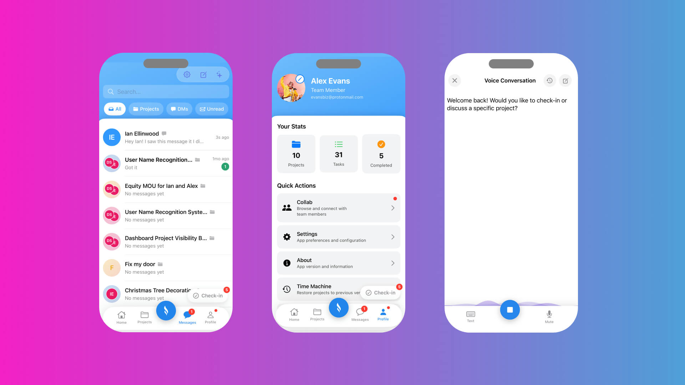
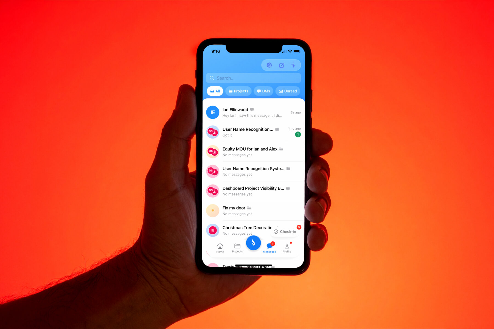
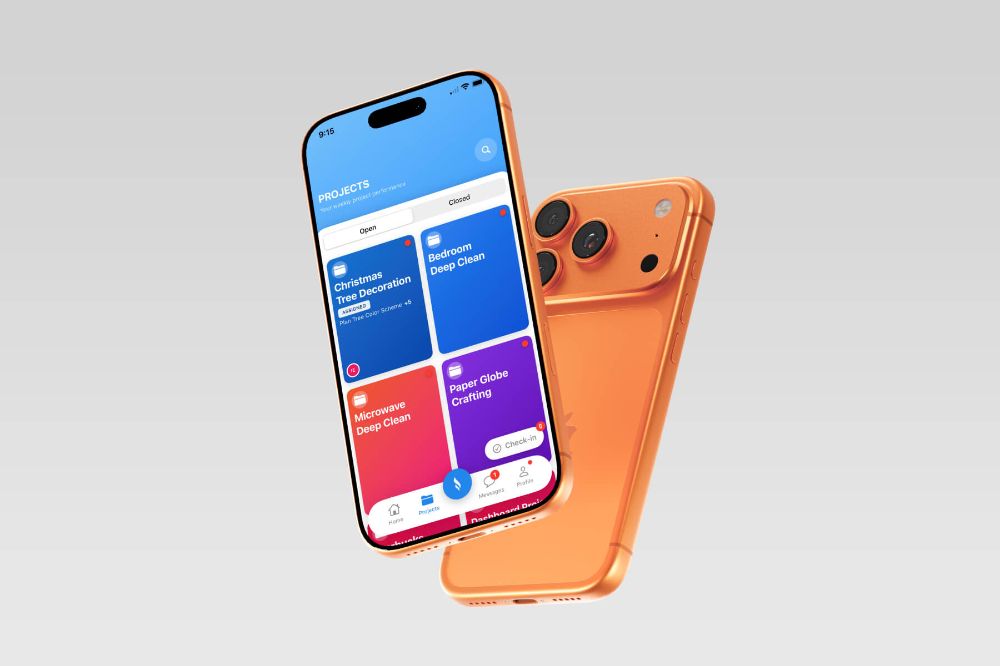

Cristos AI
Project management lives in conversation, not spreadsheets. We built an AI-powered iOS app that turns talk into action.

Overview
Cristos AI is a conversation-driven project management app built for everyone—not just professionals. We transformed the overwhelming complexity of traditional PM tools into a single, intelligent interface where users simply talk about their goals and the AI handles the rest.
The platform goes far beyond task lists. It serves as a strategic planning partner that converts natural dialogue into SMART goals, a risk analyst that anticipates failure before it happens, an agile coach that structures work into manageable sprints, and a personal growth companion that learns your patterns to make you more effective over time—from project kickoff to stakeholder update.
Achievement
"I described my project in a five-minute voice note. Cristos AI came back with a full project plan, risk assessment, and sprint schedule—work that used to take me days."
Key metrics
- 0 Reduction in project setup time compared to traditional PM tools
- 0 Task completion rate through AI-structured planning and prioritization
- 0 Faster stakeholder communication with AI-generated personalized updates

Problem
Project management has been broken for the everyday user. Tools like Monday, Asana, and Jira were built for professionals—packed with features that overwhelm anyone who just wants to get something done. People abandoned plans halfway through setup. Teams defaulted to scattered notes and group chats. Critical projects lived in people's heads with no structure, no timeline, and no accountability.
Root causes
Complexity killed adoption
Gantt charts, Kanban boards, WBS structures, and dependency mapping required training most users never received.
Every project started from zero
No tool learned from the last one. Users rebuilt the same frameworks, wrote the same stakeholder emails, and re-identified the same risks—project after project.
The human side was ignored
Traditional PM tools treated projects as mechanical processes. They tracked tasks but missed the person behind them—their work style, emotional patterns, strengths, and blind spots.

Context & Research
"I don't need another dashboard with 40 buttons. I need something that listens to what I'm trying to do and helps me do it."
By 2025, AI had transformed creative work, customer service, and knowledge management—but project management remained stuck in the spreadsheet era. Generic AI assistants could summarize and draft, but none could plan a project, assess risk, structure sprints, or adapt when things changed. We interviewed solo entrepreneurs, team leads, and first-time project managers and heard the same thing: people didn't lack ambition, they lacked a system that worked the way they think.
What we heard
Voice-first or nothing
78% said they'd plan projects more consistently if they could do it by talking instead of typing into forms.
"Don't make me learn project management to manage a project"
The most common frustration—tools assumed expertise their users didn't have.
It has to get smarter over time
Users wanted an assistant that remembered their patterns, not one that reset with every session.

Solution
Eight integrated capabilities built on a conversation-first AI layer—natural language processing, voice transcription, and adaptive intelligence that understands intent and converts dialogue into structured action. The platform adapts its depth and output to the user's context: a full project plan from a voice note for a solo founder, a risk-assessed sprint schedule for a team lead.
Cristos AI transforms the overwhelming complexity of project management into a conversation—helping everyone plan smarter, adapt faster, and achieve more.